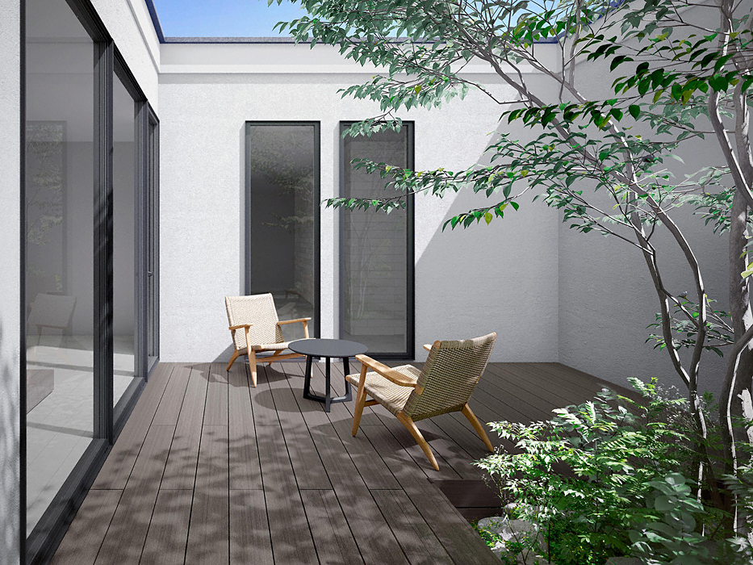

LIXIL｜人工木デッキ
樹ら楽 木彫タイプ 循環型素材「レビア」
樹ら楽 木彫タイプ 循環型素材「レビア」は、自然な木質感の表現にこだわったウッドデッキです。床材表面には左右非対称の溝加工を施し、光によって陰影が変化することで、粗密のある木目や繊細な色ムラを感じられる仕上がりとなっています。また、床材や幕板には再資源化が難しい廃プラスチックと廃木材を活用した循環型素材「レビア」を採用しています。間口1.5間～4.0間、出幅3尺～10尺まで展開され、さまざまな敷地条件に対応します。
メーカー希望価格：184,613円〜1,288,562円
施工費、基礎、加工、ステップ、フェンス、撤去、配送などは含みません。3項目で本体価格を確認
サイズを選んでください。
選んだ組み合わせに合わせて、本体参考価格が変わります。
この条件で相談する
- 商品
- 樹ら楽 木彫タイプ 循環型素材「レビア」
- サイズ
- 幅・奥行・高さを選択してください
設置場所の写真は後からでOK。工事条件はLINEで順番に確認します。
商品の特徴
樹ら楽 木彫タイプ 循環型素材「レビア」は、自然な木質感の表現にこだわったウッドデッキです。床材表面には左右非対称の溝加工を施し、光によって陰影が変化することで、粗密のある木目や繊細な色ムラを感じられる仕上がりとなっています。また、床材や幕板には再資源化が難しい廃プラスチックと廃木材を活用した循環型素材「レビア」を採用しています。間口1.5間～4.0間、出幅3尺～10尺まで展開され、さまざまな敷地条件に対応します。
価格について確認する
表示額は商品データをもとに計算した税込の商品本体参考価格です。正式な商品価格と工事費は、現地条件と必要な部材・工事を確認したうえで施工対応店が見積もります。